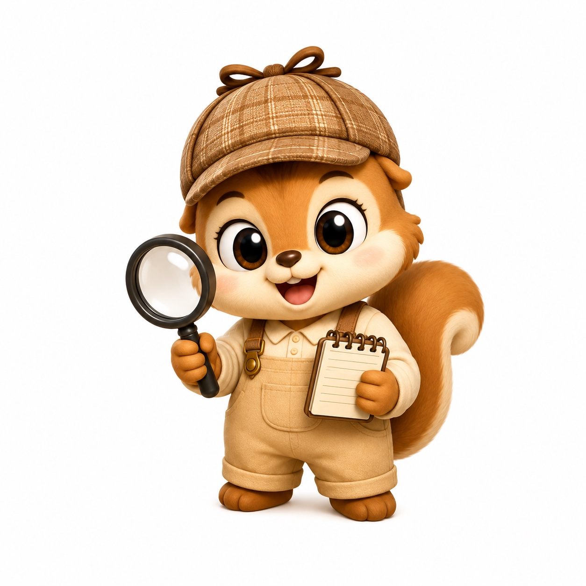
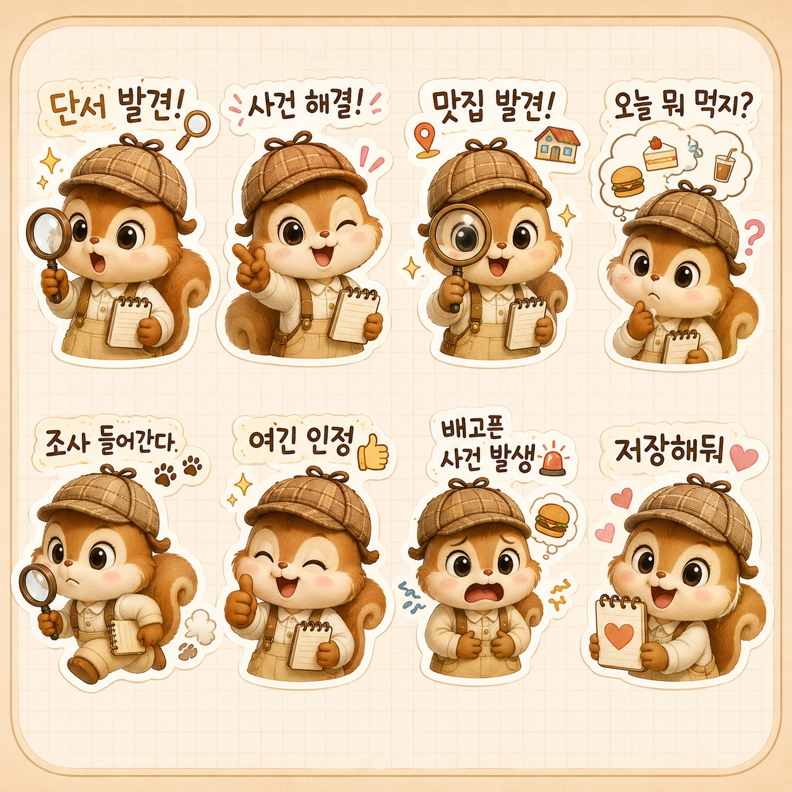
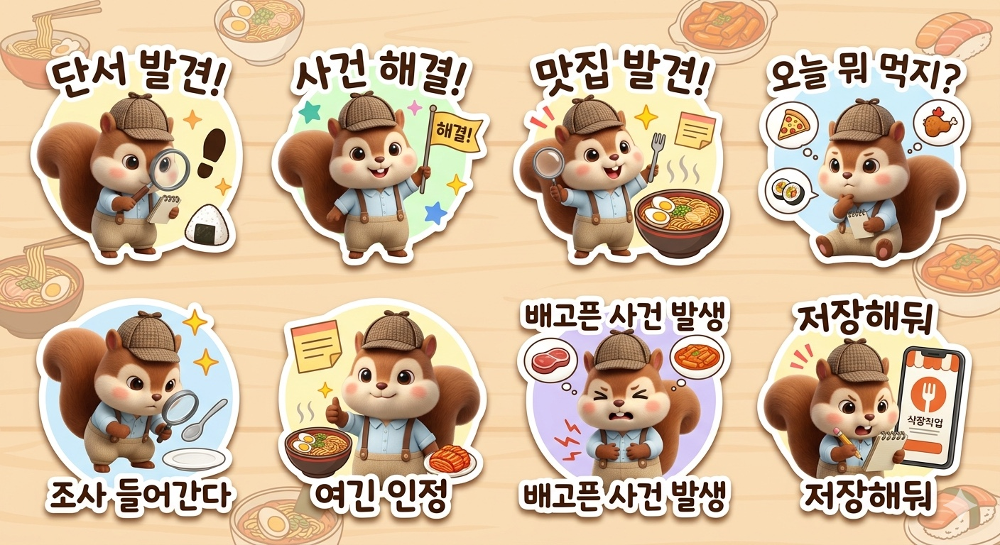
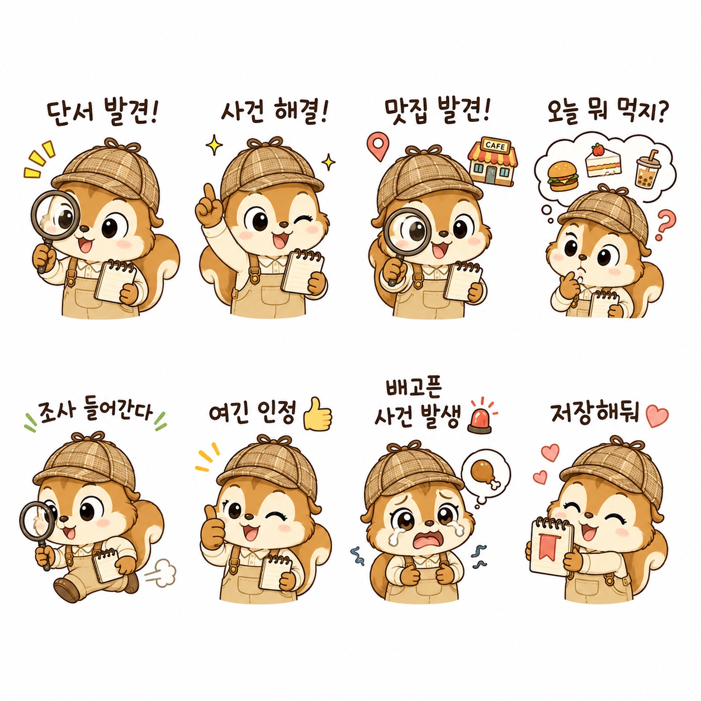
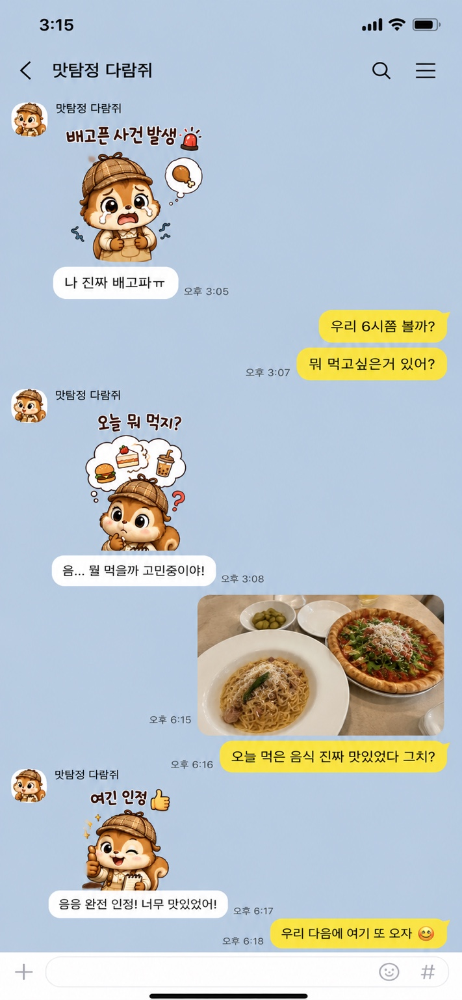
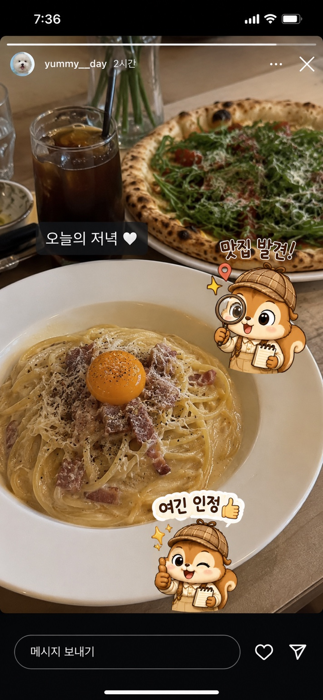
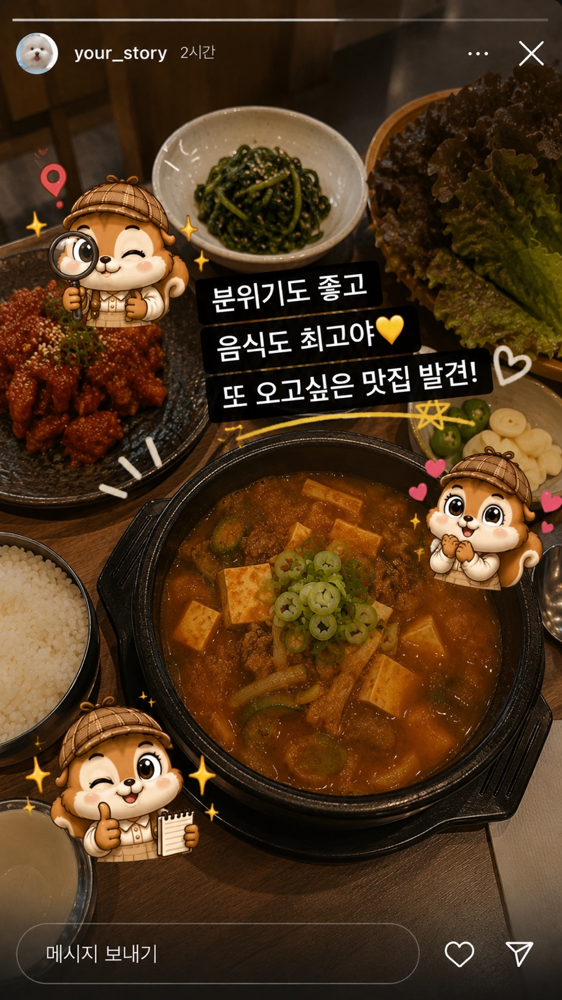

▶
▶
1탄. 맛탐정 다람쥐 맛집 조사
맛탐정 다람쥐가 실제 가게를 조사하며 메뉴의 매력을 소개하는 첫 번째 숏폼 영상입니다.
조회수 839
좋아요 5
댓글 1
AI 이미지·영상 크리에이션 프로젝트
탐정 모자를 쓰고 돋보기를 든 귀여운 다람쥐 캐릭터가 실제 맛집을 조사하고 소개하는 AI 기반 숏폼 콘텐츠 프로젝트입니다.

Character Concept
맛탐정 다람쥐는 전국의 맛집을 찾아다니며 음식의 매력과 가게의 특징을 조사하는 탐정 콘셉트의 캐릭터입니다. “사건 발생 → 조사 시작 → 단서 발견 → 사건 해결”의 흐름으로 맛집을 재미있고 직관적으로 소개합니다.
Short-form Videos
Digital Goods
숏폼 속 반복 대사와 캐릭터 리액션을 바탕으로 카카오톡 이모티콘, 인스타그램 스티커 등으로 확장했습니다.





